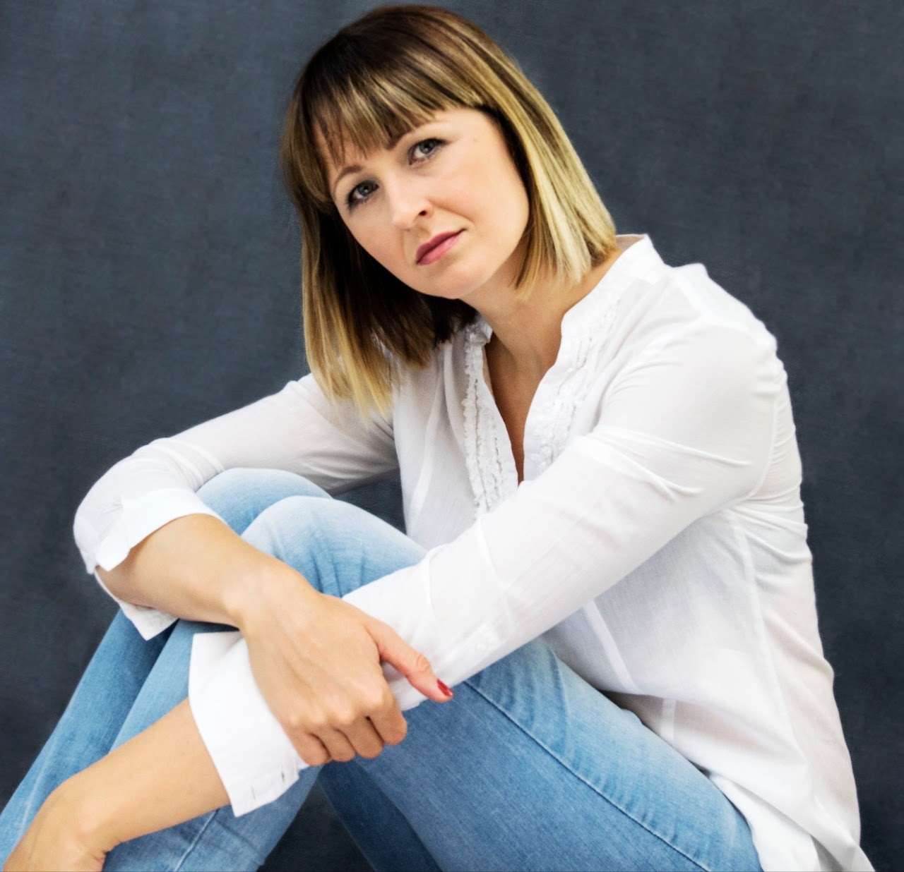

My Work



Professional portrait & lifestyle photographer based in the Netherlands.
Get in TouchMy name is Joanna and I come from Poland. I have been living in the Netherlands for 16 years.
You know that friend who is always the photographer of the group? That was me. A few years ago I decided to change my hobby into a job as a professional photographer.
At first I was photographing newborns and birthdays. Over time I discovered that portrait photography – capturing emotions and real moments – is what I truly love.
I create images that reflect people as they are, during their happiest and most honest moments. This is my passion.
Natural light photography for real people. I offer tailored sessions for portraits, couples, families, babies, personal branding and